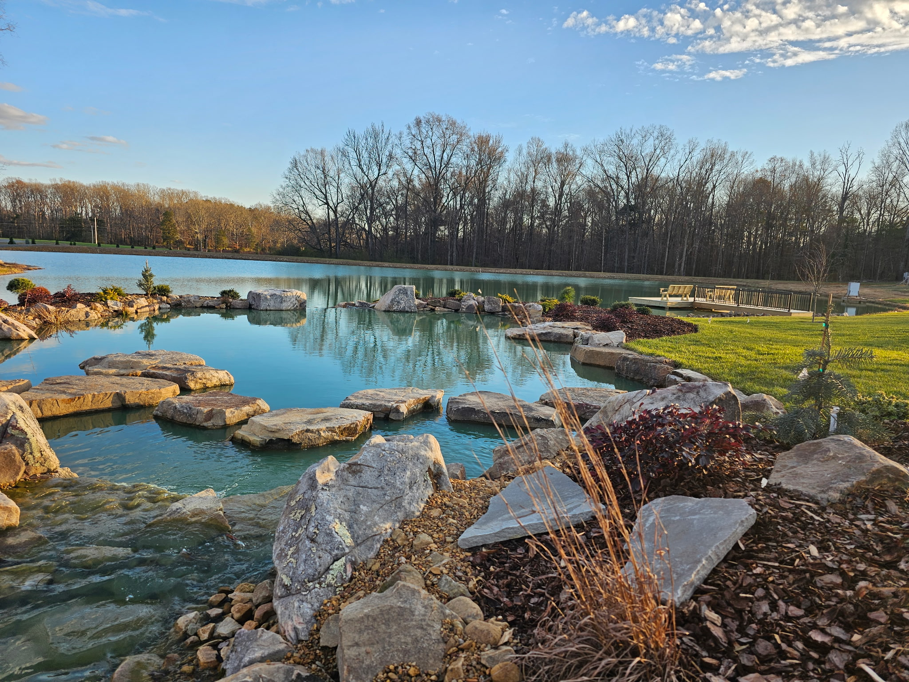

Plant Man serves Charlotte homeowners with custom stone work, patios, retaining walls, pondless waterfalls, and water-feature upgrades.

Replace this paragraph with the neighborhoods, scheduling language, and booking guidance that accurately describes Plant Man’s Charlotte service area.